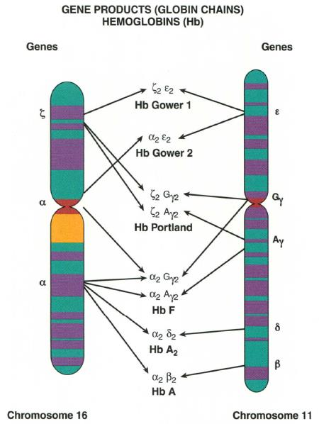

شبنم رضاپور
کسی که PDFها را راضی کرد محتوایشان را بیکموکاست لو بدهند.
این جزوه با استفاده از هوش مصنوعی تولید شده است. ممکن است شامل خطا یا برداشت نادرست باشد و نیازمند بررسی و بازبینی مجدد است.
Bone Marrow-on-a-Chip یا به اختصار BM-on-a-Chip، در این مقالات به یک سیستم میکروفلوئیدیک زیستی گفته میشود که برای بازسازی بخشی از محیط طبیعی مغز استخوان انسان در مقیاس کوچک طراحی شده است.
منظور از Chip در اینجا یک تراشه الکترونیکی مانند CPU یا مدار مجتمع نیست. این سیستم فاقد ترانزیستور، پردازنده و مدار الکترونیکی است و اساس آن بر میکروکانالهای سیال، مواد پلیمری، هیدروژل و سلولهای زنده استوار است.
هدف اصلی این سیستمها بازسازی محیط پیچیده مغز استخوان، شامل سلولهای استرومال، سلولهای اندوتلیال، سلولهای عروقی، ماتریکس خارج سلولی و عوامل رشد، در محیطی کنترلشده و قابل مشاهده است تا امکان مطالعه رفتار سلولها و برهمکنش آنها با محیط اطراف، خارج از بدن فراهم شود.
در مقاله Science Advances، چندین دستگاه پنجکاناله در یک bottomless 96-well plate قرار گرفتهاند. این ساختار علاوه بر سادهتر کردن کار با دستگاه، امکان تصویربرداری و انجام آزمایشهای متعدد به شکل استاندارد را فراهم میکند.
تعریف — Bone Marrow-on-a-Chip (BM-on-a-Chip) یک سیستم میکروفلوئیدیک زیستی که برای بازسازی بخشی از محیط طبیعی مغز استخوان انسان در مقیاس کوچک طراحی شده است.
تعریف — Endosteal niche محیط نزدیک به سطح داخلی استخوان که در این چیپ با تمایز MSCها به osteoblast-like cells و تشکیل لایه اندوستئال بازسازی میشود.
تعریف — Perivascular niche محیط عروقی اطراف رگها که در این مدل با قرار دادن HUVEC و MSC در هیدروژل fibrin/collagen و تشکیل شبکه عروقی بازسازی میشود.
تعریف — Self-organization فرآیندی که در آن سلولهای اندوتلیال بدون چاپ مکانیکی از پیش تعیینشده، خودشان به یکدیگر متصل شده و ساختارهای لولهای شبکه عروقی را ایجاد میکنند.
تعریف — Lumen فضای داخلی ساختارهای لولهای عروقی که در شبکه حاصل از خودسازماندهی سلولها ایجاد میشود.
تعریف — PDMS (polydimethylsiloxane) یک پلیمر سیلیکونی انعطافپذیر و شفاف که در ساخت بسیاری از سیستمهای میکروفلوئیدیک، از جمله ساختار فیزیکی اصلی کانالهای این چیپ، استفاده میشود.
نکته مهم
در محتوای ارائهشده، نکته امتحانی صریحی که توسط استاد علامتگذاری شده باشد ثبت نشده است؛ بنابراین این بخش به پرسشهای تمرینی برگرفته از متن اختصاص یافته است.
۱. در BM-on-a-Chip، منظور از Chip چیست و چه تفاوتی با یک CPU یا مدار مجتمع دارد؟
۲. چیدمان پنج کانال میکروفلوئیدیک در این سیستم چگونه است و هر بخش چه نقشی دارد؟
۳. مراحل ایجاد محیط اندوستئال در کانال مرکزی را توضیح دهید.
۴. شبکه عروقی در این چیپ چگونه ایجاد میشود؟ آیا عروق از قبل چاپ میشوند؟ نقش self-organization چیست؟
۱. کدام سلولها در دو کانال خارجی چیپ قرار داده میشوند؟
۲. هیدروژل مورد استفاده برای ایجاد محیط perivascular در کانال مرکزی ترکیبی از چیست؟
۳. در مقاله Biomaterials، نسبت elastomer base به curing agent در مخلوط PDMS چقدر است؟
۴. MSCها در کانال مرکزی تقریباً چند روز در محیط استئوژنیک قرار میگیرند تا لایه اندوستئال شکل بگیرد؟
۱. C
۲. A
۳. B
۴. C
مثال — مقاله Biomaterials
نسبت PDMS: <strong>elastomer base : curing agent = ۱۰:۱</strong>؛ پخت در <strong>۶۵ درجه سانتیگراد</strong> حداقل <strong>چهار ساعت</strong>.
مثال — مقاله Science Advances
بارگذاری MSC در کانال مرکزی: غلظت حدود <strong>6 × 10⁵ cells/ml</strong>، حجم <strong>۵ میکرولیتر</strong> برای هر دستگاه، حدود <strong>۳۰۰۰ سلول</strong>؛ <strong>۱.۵ ساعت</strong> اتصال اولیه؛ <strong>۲۱ روز</strong> محیط استئوژنیک.
مثال — تیمار قالب در Science Advances
استفاده از <strong>trichloro(1H,1H,2H,2H)-perfluorooctyl silane</strong> برای جلوگیری از چسبیدن PDMS به قالب <strong>EpoxAcast</strong>.
مثال — اتصال به plate
تیمار با <strong>2% v/v 3-mercaptopropyl trimethoxysilane در methanol</strong>، سپس <strong>plasma treatment</strong> و نگهداری در <strong>۶۵ درجه سانتیگراد</strong> به مدت <strong>یک شب</strong>؛ استفاده از <strong>silicone film HT-6240</strong> با <strong>plasma bonding</strong>.
| جزء | سلول/ماده | نقش |
|---|---|---|
| کانال مرکزی | MSC، سپس HUVEC + MSC در هیدروژل fibrin/collagen | ایجاد محیط شبیه مغز استخوان؛ ابتدا endosteal niche و سپس perivascular niche |
| دو کانال محیط کشت | محیط کشت، مواد غذایی، عوامل رشد | انتقال مواد غذایی و عوامل رشد به کانال مرکزی |
| دو کانال خارجی | NHLF در هیدروژل fibrin | کمک غیرمستقیم به vascularization |
| PDMS | polydimethylsiloxane | ساختار فیزیکی اصلی کانالها |
| bottomless 96-well plate | — | نگهداری چند دستگاه، تصویربرداری و انجام آزمایشهای متعدد به شکل استاندارد |
| مرحله | سلول/ماده | شرایط/نتیجه |
|---|---|---|
| ۱ | MSC | بارگذاری در کانال مرکزی؛ اتصال اولیه؛ سپس حدود ۲۱ روز محیط استئوژنیک؛ تمایز به osteoblast-like cells؛ تشکیل لایه اندوستئال |
| ۲ | HUVEC + MSC در هیدروژل fibrin/collagen | در Science Advances: HUVEC + MSC با thrombin، سپس ترکیب با fibrinogen و collagen I؛ self-organization؛ تشکیل شبکه عروقی و lumen؛ استفاده از VEGF و ANG-1 |
| ۳ | NHLF در هیدروژل fibrin | قرارگیری در کانالهای خارجی؛ تقویت غیرمستقیم vascularization |
| مرحله | ماده/نسبت | دما/زمان/جزئیات |
|---|---|---|
| تهیه قالب | silicon wafer → master → epoxy mold | — |
| تیمار قالب | trichloro(1H,1H,2H,2H)-perfluorooctyl silane | جلوگیری از چسبیدن PDMS به قالب |
| مخلوط PDMS | elastomer base : curing agent = ۱۰:۱ | ریختن روی قالب EpoxAcast؛ ۶۵ درجه سانتیگراد؛ در Biomaterials حداقل ۴ ساعت؛ در Science Advances تا پلیمریزاسیون کامل |
| پانچ ورودی/خروجی | biopsy punch یکمیلیمتری | ایجاد محلهای ورود و خروج مایع |
| اتصال به plate | 2% v/v 3-mercaptopropyl trimethoxysilane در methanol | شستشو و خشککردن؛ plasma treatment؛ نگهداری در ۶۵ درجه سانتیگراد به مدت یک شب |
| فیلم پایین | silicone film تجاری HT-6240 | اتصال با plasma bonding |
| سلول/ماده | محل | مقدار/شرایط |
|---|---|---|
| MSC | کانال مرکزی | در Science Advances: غلظت حدود ۶ × ۱۰⁵ cells/ml، حجم ۵ میکرولیتر برای هر دستگاه، حدود ۳۰۰۰ سلول؛ ۱.۵ ساعت اتصال اولیه؛ ۲۱ روز محیط استئوژنیک |
| HUVEC + MSC | کانال مرکزی | در هیدروژل fibrin/collagen؛ ایجاد محیط perivascular |
| NHLF | کانالهای خارجی | در هیدروژل fibrin |
| VEGF و ANG-1 | محیط کشت | تحریک و پشتیبانی تشکیل شبکه عروقی |
سیستم میکروفلوئیدیک زیستی برای بازسازی بخشی از محیط طبیعی مغز استخوان انسان در مقیاس کوچک.
در اینجا تراشه الکترونیکی نیست؛ ساختاری مبتنی بر میکروکانالهای سیال، مواد پلیمری، هیدروژل و سلولهای زنده.
پلیمر سیلیکونی انعطافپذیر و شفاف؛ ماده اصلی ساختار فیزیکی کانالها.
سلولهای استرومال مشتق از مغز استخوان که در کانال مرکزی به سلولهای استخوانی، بهویژه osteoblast-like cells، تمایز مییابند.
سلولهای اندوتلیال ورید بند ناف انسان که در تشکیل شبکه عروقی شرکت میکنند.
فیبروبلاستهای ریه انسانی که در کانالهای خارجی قرار میگیرند و به صورت غیرمستقیم به vascularization کمک میکنند.
محیط نزدیک به سطح داخلی استخوان که با تمایز MSCها و تشکیل لایه اندوستئال بازسازی میشود.
محیط عروقی اطراف رگها که با HUVEC + MSC در هیدروژل fibrin/collagen ایجاد میشود.
خودسازماندهی سلولهای اندوتلیال برای تشکیل ساختارهای لولهای بدون چاپ مکانیکی از پیش تعیینشده.
فضای داخلی ساختارهای لولهای عروقی که امکان حرکت سلولها در مسیرهای عروقی را فراهم میکند.
معدنیشدن ناحیه مرکزی تحت شرایط استئوژنیک.
⚠ منبع اسلاید نامشخص
نام فایل اسلاید و نویسنده/استاد در ورودی ارائه نشده است؛ بنابراین امکان تطبیق شماره اسلاید و provenance وجود ندارد. <strong>وضعیت:</strong> نیازمند بررسی
⚠ نبود اطلاعات کتابشناختی کامل مقالات
دو مقاله <strong>Science Advances</strong> و <strong>Biomaterials</strong> در متن ذکر شدهاند، اما اطلاعات کامل کتابشناختی (نویسنده، سال، DOI و...) در ورودی ارائه نشده است. <strong>وضعیت:</strong> نیازمند بررسی
